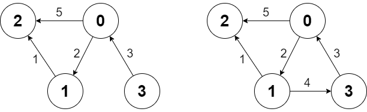

| Category | Difficulty | Likes | Dislikes |
|---|---|---|---|
| Algorithms | Hard | 866 | 58 |
samsung
There is a directed weighted graph that consists of n nodes numbered from 0 to n - 1. The edges of the graph are initially represented by the given array edges where edges[i] = [fromi, toi, edgeCosti] meaning that there is an edge from fromi to toi with the cost edgeCosti.
Implement the Graph class:
Graph(int n, int[][] edges) initializes the object with n nodes and the given edges.addEdge(int[] edge) adds an edge to the list of edges where edge = [from, to, edgeCost]. It is guaranteed that there is no edge between the two nodes before adding this one.int shortestPath(int node1, int node2) returns the minimum cost of a path from node1 to node2. If no path exists, return -1. The cost of a path is the sum of the costs of the edges in the path.
Example 1:

Input
["Graph", "shortestPath", "shortestPath", "addEdge", "shortestPath"]
[[4, [[0, 2, 5], [0, 1, 2], [1, 2, 1], [3, 0, 3]]], [3, 2], [0, 3], [[1, 3, 4]], [0, 3]]
Output
[null, 6, -1, null, 6]
Explanation
Graph g = new Graph(4, [[0, 2, 5], [0, 1, 2], [1, 2, 1], [3, 0, 3]]);
g.shortestPath(3, 2); // return 6. The shortest path from 3 to 2 in the first diagram above is 3 -> 0 -> 1 -> 2 with a total cost of 3 + 2 + 1 = 6.
g.shortestPath(0, 3); // return -1. There is no path from 0 to 3.
g.addEdge([1, 3, 4]); // We add an edge from node 1 to node 3, and we get the second diagram above.
g.shortestPath(0, 3); // return 6. The shortest path from 0 to 3 now is 0 -> 1 -> 3 with a total cost of 2 + 4 = 6.
Constraints:
1 <= n <= 1000 <= edges.length <= n * (n - 1)edges[i].length == edge.length == 30 <= fromi, toi, from, to, node1, node2 <= n - 11 <= edgeCosti, edgeCost <= 106100 calls will be made for addEdge.100 calls will be made for shortestPath.